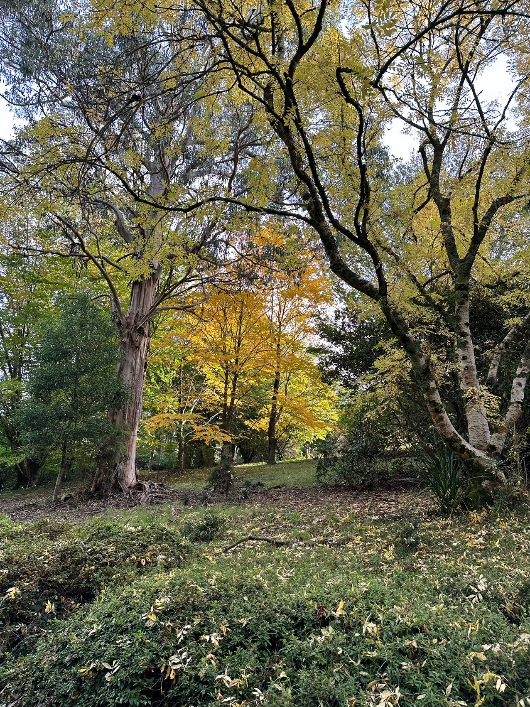

```{r}
library(emo)
```Time fly üïä
Time fly when you don’t realize. It has been three months since I started my PhD and I have to say I wish I could have done more. The first 6 weeks are quite chill. Just doing my thing and taking the break I needed. After my supervisor and I decided that it is time for me to start from the beginning, I know I need to work harder and get things done.
Progress on re-processing the data
It was harder than I expected. üò¢ It was going well until I needed to work on the text analysis. I guess I didn‚Äôt expected that it was going to be that time consuming going through hundreds of entries of treatments. Secretly I actually enjoyed it. üè• It feels like playing the doctor game when you are young and the dream of becoming a doctor are coming true. That‚Äôs what I felt during the first few hours of researching what does each treatment and drug is used for. When the day gets darker, I just so glad I am not a medical doctor. There were only around five hundreds of different treatment and medical records and I was exhausted and forgetful. Can‚Äôt image what true MD needs to remember. I mean there are some pattern in the names of drugs. For example, if it ends with ‚Äúsone‚Äù, it‚Äôs probably some sort of corticosteroid. If it ends with ‚ÄúCILLIN‚Äù or ‚ÄúCLINE‚Äù, it‚Äôs probably some sort of antibiotic.
Excited for the first academic conference ACS & OZCOTS 2023!
Thanks for the support from my principal supervisor and Emi, I am going to the ACS & OZCOTS at the end of this year! Hoping that the presentation abstract about our learnR will get accepted.
Trip back to Melbourne and Easter break
Things changed
üë¶ My study now is officially Yan‚Äôs room. I am happy for him at the same time it was hard to see a warm and comfy study been turned into a man room.
üëØ Our home is now with four people living in it so busier than before.
üò¢ I am no longer working for Monash anymore.
üêü The fish tank I didn‚Äôt really like before are more clean now. So I guess I like it better than before now.
Oh okay. I thought I would have more thing to say about things that changed but I guess everything is kinda same old same old.
Things didn’t change
☂️ Melbourne is still cold and wet.
üçµ Top tea is still super yummy and the best milk tea place!
ü•ß º∫ËÆ∞ÁÉßËÖä is still really good. Same quality and quantity since I first start eating there since undergraduate.
üíë Friends are still all round. I missed everyone and it was really good to see them.
I miss the time where we just catch up whenever because we know that we are always around. Now we can only catch up with a strict timeline.
highligts of the trip
No.1 My very first Winnie the Pooh birthday cake made my Mitch
No.2 Hot pot with Emi and friends
No.3 Birthday with Mitch at Dandenong rain-forest

No.4 Second Pooh bear cake with home grown pumpkin in the background
No.5 Birthday card signed by friends who made it to my party. Love how academic driven everyone’s wish is lol.